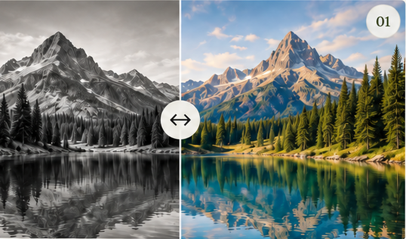
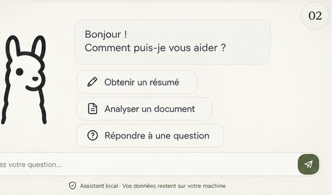
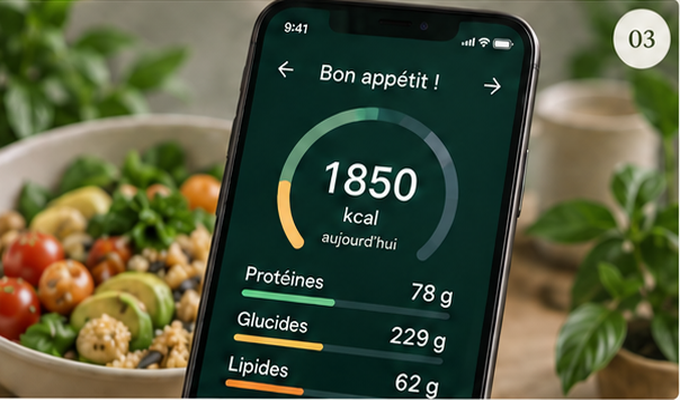

Recherche de stage · Été 2027
SSI et IA appliquée.
Étudiant en Master SSI à l’UTT, je construis des outils locaux, testables et utiles.
Je cherche un stage de fin d’études autour de la sécurité, de l’IA locale et de l’automatisation.
Faire fonctionner.
Faire comprendre.
Faire comprendre.
Des systèmes IA et cybersécurité, locaux et utiles :
des outils compréhensibles, sécurisés et réellement adoptés.
LOCALSÛRUTILE
Projets sélectionnés
Trois projets qui relient recherche, prototypage local et systèmes concrets.

Vision par ordinateurColorisation d’imagesUn modèle qui redonne une couleur plausible au gris.PythonPyTorchComputer Vision
IA localeLocal RAG AssistantUn assistant PDF local, de la recherche à la réponse sourcée.RAGLLM localPythonSécurité
Application mobileWarungFitEstimer un repas, corriger le résultat, garder la main.FlutterNutritionUX/UIDonnées locales